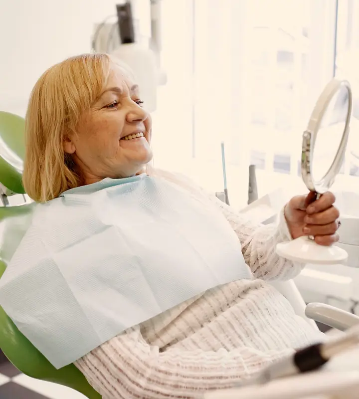
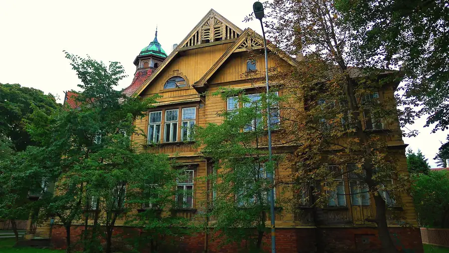
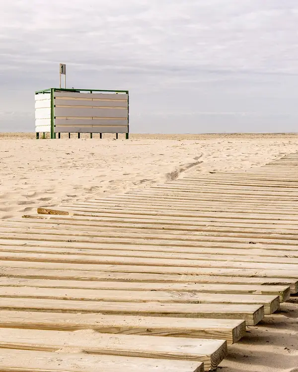
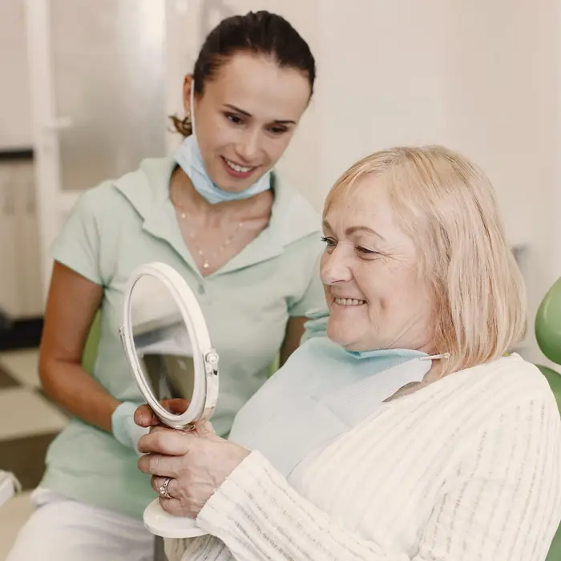

Dzintaru
iela8
Стоматологический кабинет Д. Репши
Лиепая. SIA Soladens с 1998 года.
Телефон для записи
+37127 721 641 +37163 442 446Время работы с 9:00 до 18:00. Дни приёма уточняйте по телефону.

Улица Дзинтару,
около 500 м от моря
Кабинет находится в приморской части Лиепаи, на улице со старыми деревянными домами. После визита до пляжа можно дойти пешком.


Если вы у нас впервые
Позвоните
Записаться можно по телефону в рабочее время, с 9:00 до 18:00. Дни приёма и свободное время подскажут по телефону.
Врач осматривает зубы
Во время визита врач осматривает зубы и определяет, какое лечение нужно.

Услуги
- Терапия зубов
- лечение зубов
- Хирургия
- хирургия полости рта
- Протезирование зубов
- замена утраченных зубов протезами
- Пародонтология
- здоровье дёсен и тканей вокруг зуба
- Гигиена полости рта
- профилактический уход
Если не знаете, что именно нужно, просто позвоните. 27 721 641
Dzintaru iela 8Лиепая, LV-3401
- Телефон для записи
- +371 27 721 641+371 63 442 446
- Время работы
- с 9:00 до 18:00Дни приёма уточняйте по телефону.